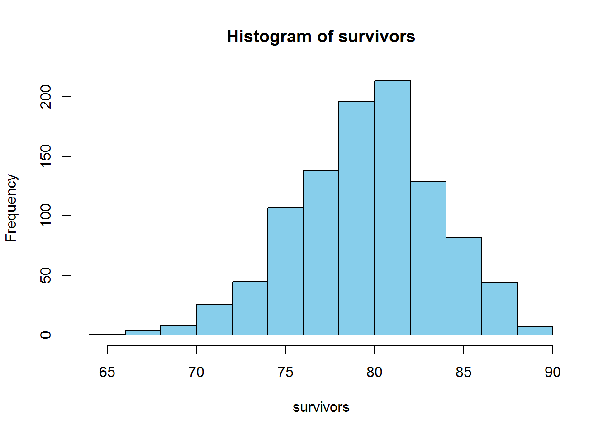
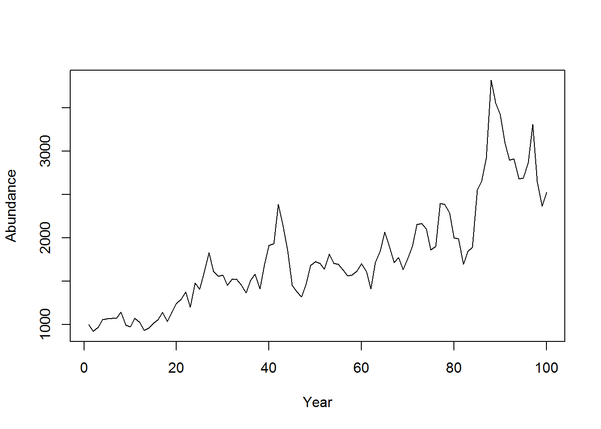
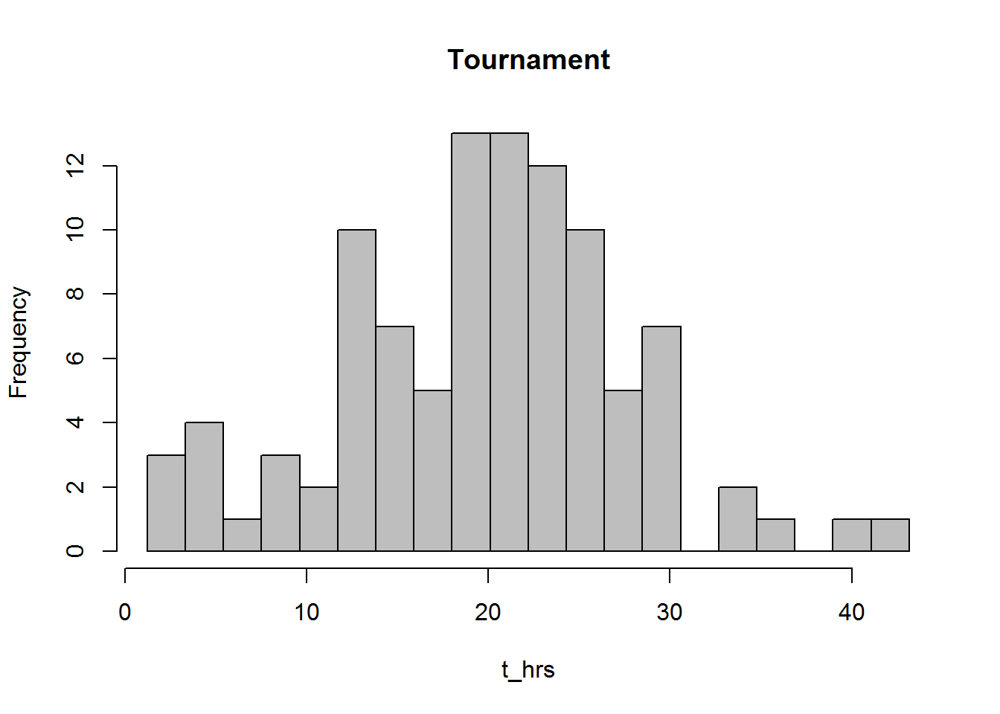
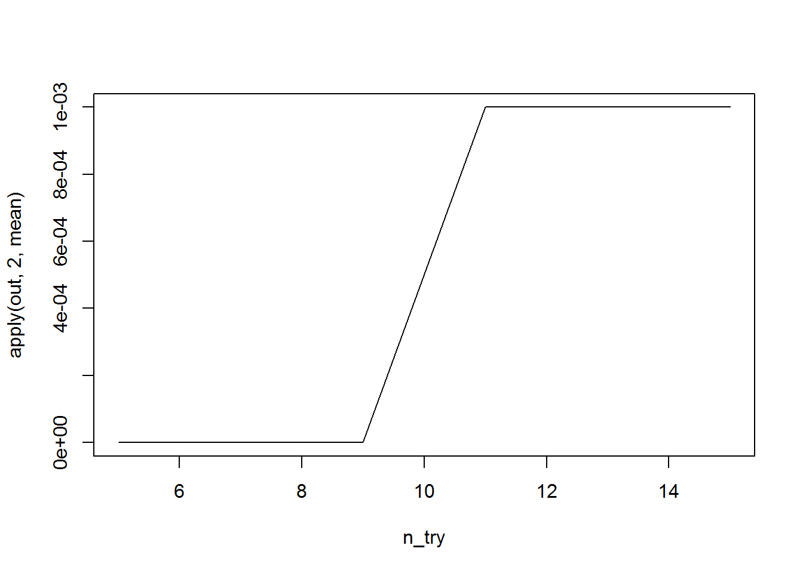

Chapter 4 Simulation and Randomization
Chapter Overview
Simulation modeling is one of the primary reasons to move away from spreadsheet-type programs (like Microsoft Excel) and into a program like R. R allows you to replicate the same (possibly complex and detailed) calculations over and over with slightly different random values. You can then summarize and plot the results of these replicated calculations all within the same program. Analyses of this type are Monte Carlo methods: they randomly sample from a set of quanities for the purpose of generating and summarizing a distribution of some statistic related to the sampled quantities. If this concept is confusing, hopefully this chapter will clarify.
In this chapter, you will learn the basic skills needed for simulation (i.e., Monte Carlo) modeling in R including:
- creation of random deviates
forloops- more advanced function writing
- summarization of many values from a distribution
IMPORTANT NOTE: If you did not attend the sessions corresponding to Chapters 1 or 2, you are recommended to walk through the material found in those chapters before proceeding to this material. Additionally, you will find the material in Section 3.3 helpful for this chapter. Remember that if you are confused about a topic, you can use CTRL + F to find previous cases where that topic has been discussed in this document.
Before You Begin
You should create a new directory and R script for your work in this Chapter. Create a new R script called Ch4.R and save it in the directory C:/Users/YOU/Documents/R-Workshop/Chapter4. Set your working directory to that location. Revisit the material in Sections 1.2 and 1.3 for more details on these steps.
4.1 Layout of this chapter
This chapter is divided into two main sections:
Required material (Sections 4.2 and 4.4) which is necessary to understand the examples in this chapter and the subsequent chapters
Example Cases (Sections 4.7 and 4.8) which apply the skills learned in the required material. In the workshop sessions, you will walkthrough 2-3 of these example cases at the choice of the group of the participants. If you are interested in simulation modeling, you are suggested to work through all of the example cases, as slightly different tricks will be shown in the different examples.
4.2 Introducing Randomness
A critical part of simulation modeling is the use of random processes. A random process is one that generates a different outcome according to some rules each time it is executed. They are tightly linked to the concept of uncertainty: you are unsure about the outcome the next time the process is executed. There are two basic ways to introduce randomness in R: random deviates and resampling.
4.2.1 Random deviates
In Section 3.3, you learned about using probability distributions in R. One of the uses was the r- family of distribution functions. These functions create random numbers following a random process specified by a probability distribution.
Consider animal survival as an example. At the end of each year, each individual alive at the start can either live or die. There are two outcomes here, and suppose each animal has an 80% chance of surviving. The number of individuals that survive is the result of a binomial random process in which there were \(n\) individuals alive at the start of this year and \(p\) is the probability that any one individual survives to the next year. You can execute one binomial random process where \(p = 0.8\) and \(n = 100\) like this:
rbinom(n = 1, size = 100, prob = 0.8)## [1] 78The result you get will almost certainly be different from the one printed here. That is the random component.
You can execute many such binomial processes by changing the n argument. Plot the distribution of expected surviving individuals:
survivors = rbinom(1000, 100, 0.8)
hist(survivors, col = "skyblue")
Another random process is the lognormal process: it generates random numbers such that the log of the values are normally-distributed with mean equal to logmean and standard deviation equal to logsd:
hist(rlnorm(1000, 0, 0.1), col = "skyblue")
There are many random processes you can use in R. Checkout Table ?? for more examples as well as the help files for each individual function for more details.
4.2.2 Resampling
Using random deviates works great for creating new random numbers, but what if you already have a set of numbers that you wish to introduce randomness to? For this, you can use resampling techniques. In R, the sample function is used to sample size elements from the vector x:
sample(x = 1:10, size = 5)## [1] 9 2 5 1 4You can sample with replacement (where it is possible to sample the same element two or more times):
sample(x = c("a", "b", "c"), size = 10, replace = T)## [1] "a" "b" "b" "a" "c" "a" "b" "c" "b" "b"You can set probabilities on the sampling of different elements1:
sample(x = c("live", "die"), size = 10, replace = T,
prob = c(0.8, 0.2))## [1] "live" "live" "live" "live" "live" "live" "live" "die" "live" "die"Notice that this is the same as the binomial random process above, but with only 10 trials and the printing of the outcomes rather than the number of successes.
4.3 Reproducing randomness
For reproducibility purposes, you may wish to get the same exact random numbers each time you run your script. To do this, you need to set the random seed, which is the starting point of the random number generator your computer uses. If you run these two lines of code, you should get the same result as printed here:
set.seed(123)
rnorm(1)## [1] -0.56047564.4 Replication
To use Monte Carlo methods, you need to be able to replicate some random process many times. There are two main ways this is commonly done: either withreplicate or with for loops.
4.4.1 replicate
The replicate function executes some expression many times and returns the output from each execution. Say we have a vector x, which represents 30 observations of fish length (mm):
x = rnorm(30, 500, 30)We wish to build the sampling distribution of the mean length “by hand”. We can sample randomly from it, calculate the mean, then repeat this process many times:
means = replicate(n = 1000, expr = {
x_i = sample(x, length(x), replace = T)
mean(x_i)
})If we take mean(means) and sd(means), that should be very similar to mean(x) and se(x). Create the se function (also shown in Section 2.11) and prove this to yourself:
se = function(x) sd(x)/sqrt(length(x))
mean(means); mean(x)## [1] 499.7709## [1] 499.5738sd(means); se(x)## [1] 5.648848## [1] 5.3664154.4.2 The for loop
In programming, a loop is a command that does something over and over until it reaches some point that you specify. R has a few types of loops: repeat, while, and for, to name a few. for loops are among the most common in simulation modeling. A for loop repeats some action for however many times you tell it for each value in some vector. The syntax is:
for (var in seq) {
expression(var)
}The loop calculates the expression for values of var for each element in the vector seq. For example:
for (i in 1:5) {
print(i^2)
}## [1] 1
## [1] 4
## [1] 9
## [1] 16
## [1] 25I print will be executed 5 times: once for each value of i. It is the same as:
i = 1; print(i); i = 2; print(i); i = 3; print(i); i = 4; print(i); i = 5; print(i)## [1] 1## [1] 2## [1] 3## [1] 4## [1] 5If you remove the print() function, see what happens:
for (i in 1:5) {
i^2
}Nothing is printed to the console. R did the calculation, but did not show you or store it. Often, you’ll need to store the results of the calculation in a container object:
results = numeric(5)This makes an empty numeric vector of length 5 that are all 0’s. You can store the output of your loop calculations in results:
for (i in 1:5) {
results[i]=i^2
}
results## [1] 1 4 9 16 25When i^2 is calculated, it will be placed in the element results[i]. This was a trivial example, because you should do things like this using R’s vectorized calculation framework: (1:5)^2 (see Section 1.6).
However, there are times where it is advantageous to use a loop. Particularly in cases where:
- the calculations in one element are determined on the value in previous elements, such as in time series models.
- the calculations have multiple steps or
- you wish to store multiple results
- you wish to track the progress of your calculations
As an illustration for item (1) above, build a (very) basic population model. At the start of the first year, the population abundance is 1000 individuals and grows by an average factor of 1.1 per year (reproduction and death processes result in a growth rate of 10%) before harvest. The growth rate varies randomly, however. Each year, the 1.1 growth factor has variability introduced by small changes in survival and reproductive process. Model these variations as lognormal random variables. After production, 8% of the population is harvested. Simulate and plot the abundance at the end of the year for 100 years:
nt = 100 # number of years
N = NULL # container for abundance
N[1] = 1000 # first end-of-year abundance
for (t in 2:nt) {
# N this year is N last year * growth *
# randomness * fraction that survive harvest
N[t] = (N[t-1] * 1.1 * rlnorm(1, 0, 0.1)) * (1 - 0.08)
}
# plot
plot(N, type = "l", pch = 15, xlab = "Year", ylab = "Abundance")
Examples of the other three utilities are shown in the examples.
4.5 Function Writing
In Monte Carlo analyses, it is often useful to wrap code into functions. This makes them easy to be replicated and have the settings adjusted. As an example, turn the population model shown above into a function:
pop_sim = function(nt, grow, sd_grow, U, plot = F) {
N = NULL
N[1] = 1000
for (t in 2:nt) {
N[t] = (N[t-1] * grow * rlnorm(1, 0, sd_grow)) * (1 - U)
}
if (plot) {
plot(N, type = "l", pch = 15, xlab = "Year", ylab = "Abundance")
}
N
}This function takes five inputs:
nt: the number of years,grow: the population growth rate,sd_grow: the amount of annual variability in the growth rateU: the annual exploitation rateplot: whether you wish to have a plot created. It has a default setting ofFALSE: if you don’t specifyplot = Twhen you callpop_sim, you won’t see a plot made.
It returns one output: the vector of population abundance.
Use your function once using the same settings as before:
pop_sim(100, 1.1, 0.1, 0.08, T)
## [1] 1000.0000 1295.7900 1167.0540 1069.0864 1262.5892 1105.1322
## [7] 1271.3711 1136.5372 918.6956 876.6976 1023.8931 1042.9960
## [13] 1049.0510 1098.0740 1095.4494 1394.5653 1513.7068 1578.7421
## [19] 1432.5964 1397.9240 1237.5714 1159.7026 1090.9918 1004.0741
## [25] 939.8106 935.7751 1049.3312 1227.2058 1201.8934 1417.5916
## [31] 1610.4107 1887.1994 2162.2882 2229.5082 1773.0274 1855.5533
## [37] 1685.5738 1698.3613 1909.4173 1965.4014 2049.5859 2317.5072
## [43] 2182.4272 2665.3237 2586.9369 2526.1907 2509.4155 2779.7149
## [49] 3111.1756 3060.8676 3234.6840 3610.3290 3573.5155 3622.2968
## [55] 3515.1466 3731.0774 3579.4810 4205.3906 4167.5403 4153.6562
## [61] 4610.1569 5728.6671 6037.1513 7522.9763 7309.7468 7770.8357
## [67] 7843.0532 9911.8712 9754.7090 12938.7605 13688.7754 13917.7057
## [73] 13448.8651 12676.8634 12799.8298 12283.9954 13129.9338 14794.9673
## [79] 14972.1067 15463.3070 16349.9490 14523.0243 15156.4361 15651.2050
## [85] 17422.2729 18594.8657 17792.5617 19910.6253 19454.9460 18859.2774
## [91] 16916.8541 19681.7666 21168.8864 23637.4310 24125.8204 23155.2549
## [97] 32639.1507 29838.7846 26778.3891 30792.7302Now, you wish to replicate exectuing this function 1000 times. Use the replicate function to do this:
out = replicate(n = 1000, expr = pop_sim(100, 1.1, 0.1, 0.08, F))If you do dim(out), you’ll see that rows are stored as years (there are 100 of them) and columns are stored as replicates (there are 1000 of them). Notice how wrapping the code in the function made the replicate call easy.
Here are some advantages of wrapping code like this into a function:
- If you do the same task over and over, you don’t need to type all of the code to perform the task, just the function call.
- If you need to change the way the function behaves (mechanically in the function body), you only need to change it one place: in the function definition.
- You can easily change the settings of the code (e.g., whether you want to see the plot) in one place
- Function writing can lead to shorter scripts
- Function writing can lead to more readable code (if people know what your functions do)
4.6 Summarization
After replicating a calculation many times, you will need to summarize the results. Here are several examples using the out matrix.
4.6.1 Central Tendency
You can calculate the mean abundance each year across your iterations using the apply function (Section 1.9):
N_mean = apply(out, 1, mean)
N_mean[1:10]## [1] 1000.000 1020.206 1039.908 1055.698 1072.032 1093.386 1113.873
## [8] 1130.438 1151.554 1174.707You could do the same thing using median rather than mean. Mode is more difficult to calculate in R, if you need to get the mode, try to Google it2.
4.6.2 Variability
One of the primary reasons to conduct a Monte Carlo analysis is to obtain estimates of variability. You can summarize the variability easily using the quantile function:
N_quants = apply(out, 1, function(x) quantile(x, c(0.1, 0.9)))
plot(N_mean, type = "l", ylim = c(0, 10000))
lines(N_quants[1,], lty = 2)
lines(N_quants[2,], lty = 2)
Notice how a user-defined function was passed to apply. The range within the two dashed lines represents the range that encompassed the central 80% of the random abundances each year.
4.6.3 Frequencies
Often you will want to count how many times something happened. In some cases, the fraction of times something happened can be interpretted as a probability.
The table function is very useful for counting occurences of events. Suppose you are interested in how many of your iterations resulted in fewer than 1000 individuals at year 10:
out10 = ifelse(out[10,] < 1000, "less10", "greater10")
table(out10)## out10
## greater10 less10
## 671 329Suppose you are also interested in how many of your iterations resulted in fewer than 1100 individuals at year 20:
out20 = ifelse(out[20,] < 1100, "less20", "greater20")
table(out20)## out20
## greater20 less20
## 629 371Now suppose you are interested in how these two metrics are related:
table(out10, out20)## out20
## out10 greater20 less20
## greater10 522 149
## less10 107 222As an example in iterpretting this output, most often populations that were greater than 1000 at year 10 were also greater than 1000 at year 20. If a population was less than 1000 at year 10, it was more likely to be less than 1100 at year 20 than to be greater than it.
You can turn these into probabilities (if you believe your model represents reality) by dividing each cell by the total number of iterations:
round(table(out10, out20)/1000, 2)## out20
## out10 greater20 less20
## greater10 0.52 0.15
## less10 0.11 0.224.7 Simulation-Based Examples
4.7.1 Test rnorm
In this example, you will verify that the function rnorm works the same way that qnorm and pnorm work. Hopefully it will also reinforce the way the random, quantile, and cumulative distribution functions work in R. If you’re feeling advanced, try adjusting this example for another distribution like the Poisson.
First, specify the mean and standard deviation for this example:
mu = 500; sig = 30Now make up n (any number of your choosing, something greater than 10) random deviates from this normal distribution:
random = rnorm(100, mu, sig)Test the quantiles (obtain the values that p * 100% of the quantities fall below, both for random numbers and from the qnorm function):
p = seq(0.01, 0.99, 0.01)
random_q = quantile(random, p)
normal_q = qnorm(p, mu, sig)
plot(normal_q ~ random_q); abline(c(0,1))
The fact that all the quantiles fall around the 1:1 line sugggests the n random samples samples are indeed from a normal distribution. Any variabilities you see are due to sampling errors. If you increase n to n = 1e6 (one million), you’ll see no deviations. This is called a q-q plot, and is frequently used to assess the fit of data to a distribution.
Now test the values in their agreement with the pnorm function. Plot the cumulative density functions for the truely normal curve and that approximated by the random deviates:
q = seq(400, 600, 10)
random_cdf = ecdf(random)
random_p = random_cdf(q)
normal_p = pnorm(q, mu, sig)
plot(normal_p ~ q, type = "l", col = "blue")
points(random_p ~ q, col = "red")
The ecdf function obtains the empirical cumulative density function (which is just pnorm for a sample). It allows you to plug in any random variable and obtain the probability of having one less than it.
4.7.2 Stochastic Power Analysis
A power analysis is one where the analyst wishes to determine how much power they will have to detect an effect of size d if the sample size is n and the variability is sig. Having high power means ensuring you do not falsely reject a true hypothesis (e.g., claiming that d is zero based on a p-value greater than 0.05).
You can conduct a power analysis using stochastic simulation. Here, you will write a power analysis to determine how likely are you to be able to correctly identify what you deem to be a biologically-meaningful difference in survival between two tagging procedures.
You know one tagging procedure has approximately a 5% mortality rate. Another, cheaper and less labor intensive method has been proposed but before implementing it, your agency wishes to determine if it will have a meaningful impact on the reliability of the study. You and your colleagues determine that if the mortality rate reaches 15%, then it is too costly to implement the new strategy (tags are expensive, after all) and have decided to perform a small-scale study to determine if the new method affects mortality enough to make it inefficient (i.e., have 15% or more mortality). Before performing the study however, they have enlisted your help in determining how many individuals they need to tag using each method to answer their question. You decide to use a stochastic power analysis based on what you’ve learned in this book to help your research group. The small scale study can tag a total of at most 30 fish. Could they tag fewer and still have a high probability of correctly identifying an effect of this size?
The approach works like this (this is called psuedocode):
- Simulate data under the reality that the difference is real with
nobservations per treatment, wheren < 30/2. - Fit the model that will be used when the real data are collected.
- Determine if an effect at least as large as the effect of interest was detected with a significant p-value
- Replicate steps 1 - 3 many times. Determine what fraction of times the effect was correctly identified.
- Replicate step 4 while varying
nover the interval from 5 to 15.
First, create a function that will generate data, fit the model, and determine if the p-value is significant (steps 1-3 above):
sim_fit = function(n, p_old = 0.05, p_new = 0.15) {
# create the data
dead_old = rbinom(n, size = 1, prob = p_old)
dead_new = rbinom(n, size = 1, prob = p_new)
# create the predictor variable
method = rep(c("old", "new"), each = n)
# create a data.frame to pass to glm
df = data.frame(dead = c(dead_old, dead_new), method = method)
df$method = relevel(df$method, ref = "old")
# fit the model
fit = glm(dead ~ method, data = df, family = binomial)
# extract the p-value
pval = summary(fit)$coef[2,4]
# determine if it was found to be significant
pval < 0.05
}Next, for steps 4 and 5, set up a nested for loop. This will have two loops: one that loops over sample sizes for step 5 and one that loops over replicates of each sample size (step 4):
I = 1000 # the number of replicates at each sample size
n_try = seq(5, 15, 2) # the test sample sizes
N = length(n_try) # count them
# container:
out = matrix(NA, I, N) # matrix with I rows and N columns
for (n in 1:N) {
for (i in 1:I) {
out[i,n] = sim_fit(n = n_try[n])
}
}You now have a matrix of TRUE and FALSE elements that indicates whether a significant difference was found at the \(\alpha = 0.05\) level if the effect was truely as large as you care about. You can obtain the proportion of all the replicates at each sample size that resulted in a significant difference using the mean function with apply:
plot(apply(out, 2, mean) ~ n_try, type = "l")
Even if you tagged 30 fish total, you would have a 0% chance of saying the effect (which truely is there!) is present under the null hypothesis testing framework.
Suppose you and your colleagues aren’t relying on p-values in this case, and are purely interested in the effect size. Adapt your function to determine how frequently it is you would be able to estimate an effect at least as large as 0.05 vs. 0.15 based on the point estimate only, not the p-value. Change the lines that summarize the fit model object and perform the logical condition to be:
# obtain the estimated mortality rate for the new method
p_new_est = predict(fit, data.frame(method = c("new")),
type = "response")
# determine if it is at least 0.15
p_new_est >= 0.15Run your function through the same loop and make the same plot:

- Harvest-policy analysis
- Mark-recapture evaluation
- Stochastic power analysis
4.8 Resampling-Based Examples
- Permutation tests
- The bootstrap